TRAVPLAN · RESEARCH STUDY · 2026-10
보도 위의 로봇을
움직이는 수식들
인식 → Planner → Controller → 안전 필터. 대시보드 리서치 문서의 핵심 논문을 수식과 그림으로 따라간다.
Elevation mapping
Diffusion · Flow matching
MPPI · NMPC+GP
CVaR · CBF · Conformal
ROADMAP
파이프라인 한 줄, 수식 열두 개
1 · 인식 §A
점군 → 지도
Kalman 높이 갱신
기하 비용 + 이분산 손실
BKI 빈 셀 채우기
TravMap
[8, H, W]
elev · grad · slope
step · rough
cost · sigma
2 · Planner §B
지도 → 궤적
Diffusion · guidance
Flow matching
Planner D
3 · Controller §E
궤적 → 명령
MPPI와 KL 유도
NMPC + 잔차 GP
4 · 안전 §C
명령 → 보증
CVaR · CBF-QP
CVaR-BF
Conformal
공통 표현은 costmap이 아니라 TravMap이다. 모든 모듈이 같은 8채널 텐서를 읽는다. 그래서 각 단계의 수식은 결국 “여기를 얼마나 싸게, 얼마나 확신하며 지날 수 있나”라는 한 질문의 다른 얼굴이다.
출처: travplan 리서치 문서 — 개요(§0), 인식(§A), Planner(§B), Controller·안전(§E, §C), 배경·수식(§0.x)
개요 · COSTMAP vs TRAVMAP
“무언가 있나”가 아니라 “지날 수 있나”
Nav2 costmap은 셀마다 0–255 비용 하나를 갖는다. 보도에서는 다섯 곳이 무너진다.
① 점유/비점유 이분법 — 8° 램프 = 평지
② 2D 투영 — 10 cm 턱 = 2 m 벽, 포트홀은 “미관측”
③ 불확실성 없음 — 못 본 곳은 플래그일 뿐
④ inflation은 고정된 기하 연산
⑤ 지면 평면 가정 — 경사면이 장애물로
Nav2 메인테이너도 2019년에 같은 결론을 적었다 [1]: “비었나 찼나 대신 — 여기를 지날 수 있나.”
| 채널 | 답하는 한계 |
|---|---|
| ELEV | ② 높이를 버리지 않는다 |
| GRAD_X · GRAD_Y · SLOPE | ①⑤ 경사를 값으로 |
| STEP | ② 연석 ≠ 벽 (0.08 m) |
| ROUGH | ① 자갈 ≠ 아스팔트 |
| COST | ① 연속값 [0, 1] |
| SIGMA | ③ 얼마나 확신하나 |
[1] Nav2 Issue #1278, “Redesign Environmental Representation”, ros-navigation/navigation2 (2019, open) · travplan 문서 개요 “ROS/ROS2 costmap의 한계”
PART 1 · 인식 §A
점군을 높이·비용·
불확실성 지도로
세 가지 추정 문제: 셀의 높이를 어떻게 합치나, 높이로 비용을 어떻게 매기나, 관측이 없는 셀을 어떻게 채우나.
§A.1 · ELEVATION MAPPING
셀 높이는 1차원 Kalman 필터다
점 높이 측정의 분산 σₚ²는 센서 거리 d의 제곱에 비례한다. 셀의 추정 h(분산 σₘ²)와 정밀도 가중 평균으로 합친다 [2].

시간 감쇠 — 갱신 없는 셀은 분산 σₜ²를 더한다
가시성 정리 — 광선이 지나간 셀의 높이를 지운다
상한 층 — 못 본 셀의 지면 ≤ 지나간 광선 높이 [3]
상한 기울기 작음 → 가려진 구멍, 큼 → 위험한 낙차. 포트홀을 가르는 travplan 그림자 상한(TP-0044)의 근거.

elevation_mapping_cupy (Fig. 1) [3] — travplan L1 인식 루프의 코어
[2] Fankhauser et al., “Robot-Centric Elevation Mapping with Uncertainty Estimates”, CLAWAR 2014
[3] Miki et al., “Elevation Mapping for Locomotion and Navigation using GPU”, IROS 2022 — arXiv:2204.12876
§A.10 · §0.8 · TRAVERSABILITY
비용은 최댓값 규칙, 불확실성은 학습한 분산
기하 기준선 — 한계로 나눈 특징 중 가장 나쁜 것. r(x) = clip((x−0.3)/0.7, 0, 1)
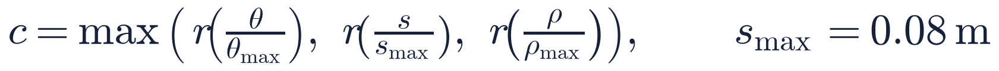
TravNet — 비용과 log σ²를 함께 내는 이분산 NLL [4]
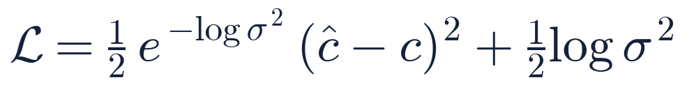
최소점은 σ = |오차|. 단, 평균 기울기에 1/σ²가 곱해져 어려운 셀을 덜 배운다 → β-NLL은 1/σ로 완화한다.
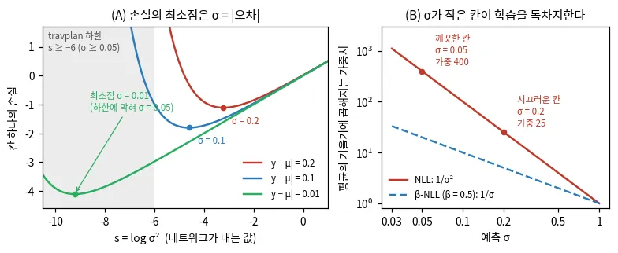
(A) s = log σ²에 대한 손실, 최소점 σ = |오차| (B) 평균 기울기 가중치 — travplan 작도
코드: GeometricTraversability, heteroscedastic_loss — representation/traversability.py
[4] Kendall & Gal, “What Uncertainties Do We Need in Bayesian Deep Learning for Computer Vision?”, NeurIPS 2017 — arXiv:1703.04977
§0.10 · BAYESIAN KERNEL INFERENCE
이웃의 관측을 거리만큼 덜 믿는다
LiDAR 점은 멀수록 성기고 연석 뒤엔 그림자가 진다. BKI는 관측 i를 “관측 k(x*, xᵢ)개”로 세어 셀마다 사후분포를 만든다 [5][6].
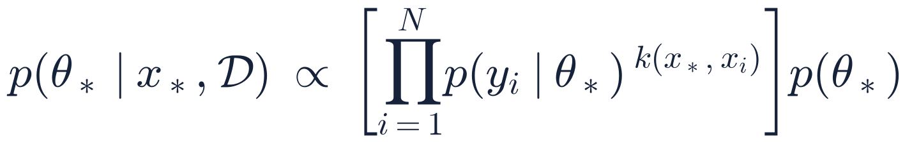
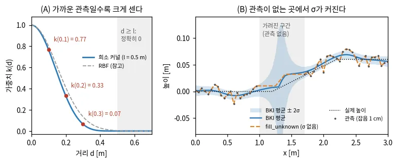
(A) 희소 커널, l = 0.5 m (B) 가려진 단면의 평균 ± 2σ — travplan 작도
가까운 관측이 많으면
유효 관측 수 Σk가 커져 사후가 좁다 → 낮은 σ
관측이 없으면
사전분포가 남는다 → 그대로 SIGMA 채널이 된다
희소 커널
반경 l 밖은 정확히 0 → 계산이 지역적
[5] Vega-Brown, Doniec & Roy, “Nonparametric Bayesian Inference on Multivariate Exponential Families”, NeurIPS 2014
[6] Gan et al., “Bayesian Spatial Kernel Smoothing for Scalable Dense Semantic Mapping”, RA-L 2020 — arXiv:1909.04631
PART 2 · PLANNER §B
궤적을 회귀하지 않고
생성한다
시연의 절반이 기둥 왼쪽, 절반이 오른쪽으로 비켜 갔다면 회귀의 평균은 기둥을 향한다. 생성 모델은 두 봉우리를 그대로 지킨다.
§0.5 · DIFFUSION
노이즈를 더하는 과정을 거꾸로 배운다
순방향은 닫힌 식이다 — 어느 시각 t든 한 번에 샘플링한다 [7].
학습은 섞인 노이즈 ε를 맞히는 회귀 하나뿐이다.
노이즈 예측 = score — 역방향 SDE·ODE는 이 score만으로 데이터로 돌아간다 [8].
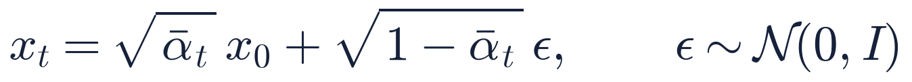
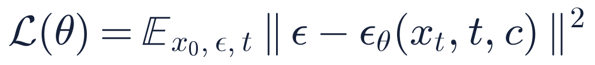
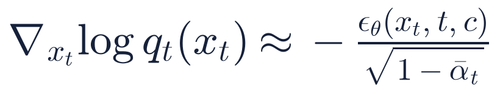
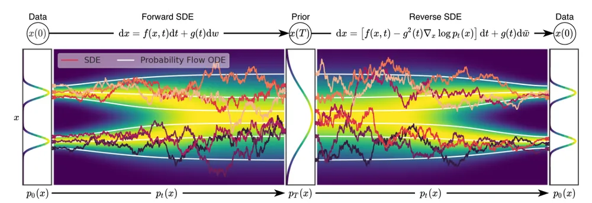
Score SDE (Fig. 2) [8] — 봉우리 둘인 데이터 → 가우시안(왼쪽) → 다시 데이터(오른쪽). 흰 선은 같은 분포를 지나는 확률 흐름 ODE. 봉우리 둘 = 기둥 왼쪽·오른쪽 궤적이다.
[7] Ho, Jain & Abbeel, “Denoising Diffusion Probabilistic Models”, NeurIPS 2020 — arXiv:2006.11239
[8] Song et al., “Score-Based Generative Modeling through Stochastic Differential Equations”, ICLR 2021 — arXiv:2011.13456
§0.5 · §B.8 · DIFFUSER & GUIDANCE
계획은 샘플링, 비용은 score에 더하는 힘
Diffuser는 궤적 전체를 한 번에 denoise한다 [9]. 목표·비용은 학습 후에 붙인다.
Classifier-free guidance — 조건 있는·없는 예측의 외삽 [10]
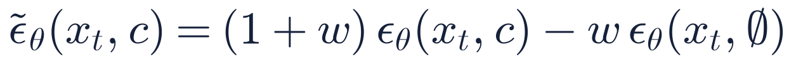
에너지 guidance (DPS) — 예측한 x̂₀에서 비용 𝓔를 재고 그 기울기로 민다 [11]
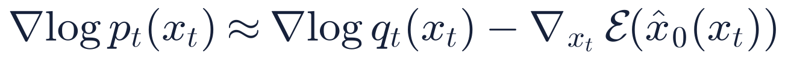
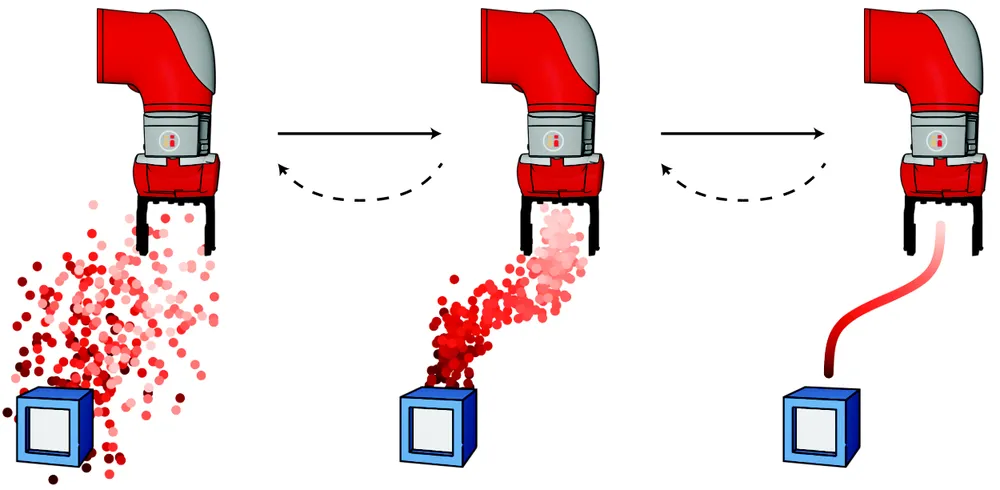
Diffuser (Fig. 1) [9] — 궤적 전체가 diffusion의 데이터

guidance 없음: 반반 / E = y: 보행자 반대쪽으로 — travplan 작도
[9] Janner et al., “Planning with Diffusion for Flexible Behavior Synthesis”, ICML 2022 — arXiv:2205.09991 · [10] Ho & Salimans, “Classifier-Free Diffusion Guidance”, 2022 — arXiv:2207.12598
[11] Chung et al., “Diffusion Posterior Sampling for General Noisy Inverse Problems”, ICLR 2023 — arXiv:2209.14687
§0.6 · FLOW MATCHING · RECTIFIED FLOW
노이즈와 데이터를 직선으로 잇고, 속도를 배운다
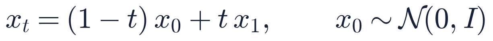
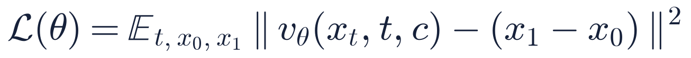
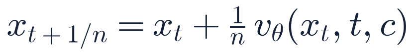
조건부 → 주변: 짝지은 직선의 회귀만으로 전체 흐름 uₜ(x) = E[x₁ − x₀ | xₜ = x]를 배운다(기울기가 같다) [12].
주의: 짝 직선은 서로 교차하지만 평균 속도장은 교차하지 않는다. Euler 1스텝이면 모든 샘플이 평균(기둥)으로 간다 [13].
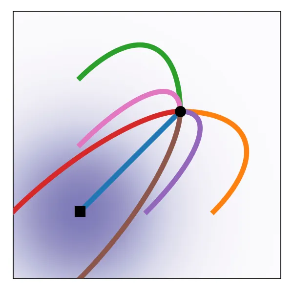
diffusion 경로
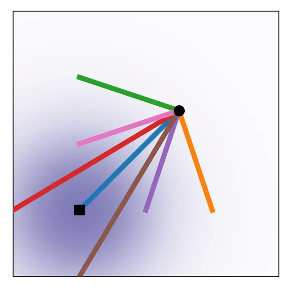
OT(직선) 경로
Flow Matching (Fig. 3) [12]
diffusion과 flow matching은 다른 방법이 아니라 같은 ODE의 두 좌표계다(§0.6b). 진짜 차이는 경로의 굽음 = 필요한 스텝 수.
[12] Lipman et al., “Flow Matching for Generative Modeling”, ICLR 2023 — arXiv:2210.02747
[13] Liu, Gong & Liu, “Flow Straight and Fast: Learning to Generate and Transfer Data with Rectified Flow”, ICLR 2023 — arXiv:2209.03003
travplan · PLANNER D (TP-0137)
후보 16개를 10스텝에 — 계획 3.4 ms

curb_ramp seed 1, 후보 16개(연보라, 빨강 = 치명)와 고른 궤적(청록). 왼쪽부터 flow 10스텝 · diffusion 10스텝 · flow 1스텝 [12][13]
데이터 x₁ = 제어 변화율
40스텝 × (vx, vy, ωz)의 가속을 한계로 정규화. 적분 → SwerveModel.rollout
비용 guidance
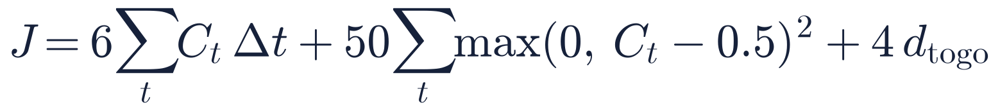
x̂₁에서 ∇J로 속도를 민다
“1스텝 = 평균”은 83%
학습된 네트워크에서는 이론만큼 뭉개지지 않는다. 남은 잡음이 두 번 적분돼 끝점이 ~1 m 흩어진다
출처: travplan Planner 문서 §B.15.1(TP-0137), 배경 §0.6 · 코드 planners/learned/flow_model.py · 벤치마크 results/tp0025_v2 (planner_d+mppi 12/12)
PART 3 · CONTROLLER §E
샘플링해 가중하거나,
미분해서 푼다
MPPI는 계단 모양 비용(치명 셀)을 그대로 쓴다. NMPC는 hard 제약과 튜브를 품는다. travplan은 두 갈래를 같은 벤치마크에서 비교한다.
§0.2 · §E.1 · MPPI
비용이 낮을수록 지수적으로 큰 가중치를 준다
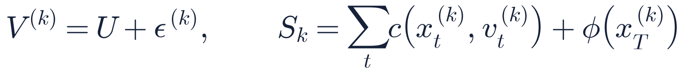

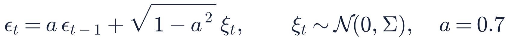
λ = 너그러움. 비용이 λ만큼 오를 때마다 가중치가 1/e로 준다. S = (10, 11, 13, 20), λ = 0.5 → w = (0.879, 0.119, 0.002, 0.000) [14]
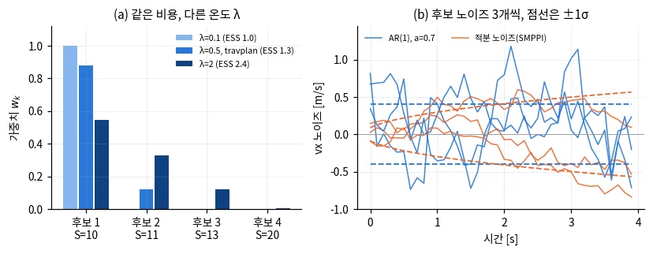
(a) λ별 가중치·ESS (b) AR(1) vs 적분 노이즈(SMPPI [15]) — travplan 작도
| MPPIConfig | 기본값 |
|---|---|
| 후보 K | 768 |
| horizon T × dt | 40 × 0.1 s |
| 온도 λ | 0.5 |
| 경로 추종 후보 | 30 % |
[14] Williams et al., “Information Theoretic Model Predictive Control: Theory and Applications to Autonomous Driving”, IEEE T-RO 2018 — arXiv:1707.02342
[15] Kim et al., “Smooth Model Predictive Path Integral Control without Smoothing”, IEEE RA-L 2022 — arXiv:2112.09988
§0.2 · §R.7 · CONTROL AS INFERENCE
왜 지수 가중인가 — 자유 에너지와 KL
① 기준 분포 p(노이즈)에서 덜 벗어나며 기대 비용을 줄이는 분포 q [14].
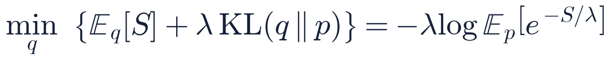
② 최적 분포는 비용의 볼츠만 분포다. 제어 분포 q_U를 그쪽으로 KL 투영하면 가중평균이 나온다.
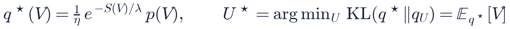
③ q*에서는 직접 샘플링할 수 없으니 p에서 샘플링하고 중요도 가중 → wₖ ∝ exp(−Sₖ/λ). 강화학습의 “추론으로서의 제어”(§R.7)와 같은 식이다.
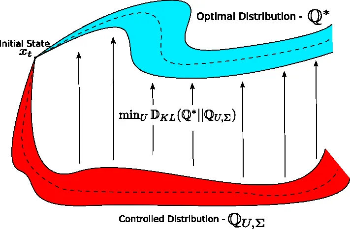
Information-theoretic MPC (Fig. 2) [14] — 가중평균 한 번 = 이 밀기의 한 걸음
travplan은 제어 비용 항을 뺐다 → KL이 “이전 해에서 벗어남”에 페널티를 준다. 그래서 KL 해석은 근사로만 맞다.
[14] Williams et al., IEEE T-RO 2018 — arXiv:1707.02342 · 관련: travplan 강화학습 문서 §R.7–R.8(Levine, CS 285 “Control as Inference”)
§M · NMPC + RESIDUAL GP
모르는 동역학은 GP로, 그 분산은 제약 여유로
① 공칭 모델 + 잔차 GP [16]. GP 평균은 acados 파라미터로 → 0차 근사 [17].

② 확률 제약은 가우시안이면 결정론적 제약으로 바뀐다.
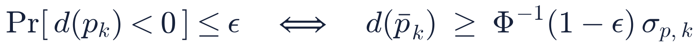
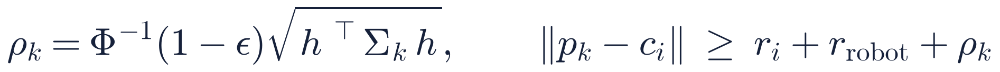
③ 여유 ρₖ는 고정 inflation이 아니라 예측 불확실성이 정한다 — costmap 한계 ④에 대한 답.
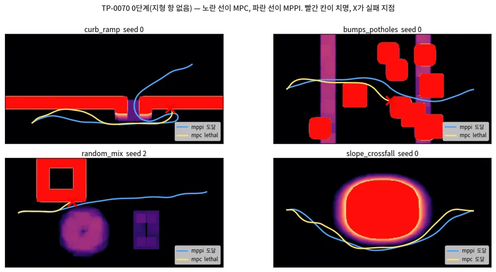
TP-0070 0단계(지형 항 없음): 노랑 MPC, 파랑 MPPI, X = 실패
| plant L1 레벨 3 | 도달 (치명) |
|---|---|
| mppi_plant_lag | 239/360 (4) |
| mpc | 222/360 (34) |
| mpc_gp | 215/360 (32) |
[16] Hewing, Kabzan & Zeilinger, “Cautious Model Predictive Control Using Gaussian Process Regression”, IEEE TCST 2020 — arXiv:1705.10702
[17] Verschueren et al., “acados — a modular open-source framework for fast embedded optimal control”, Math. Prog. Comp. 2022 — arXiv:1910.13753
PART 4 · 안전 §C
평균이 아니라
나쁜 꼬리를 본다
보도 로봇의 실패는 평균에서 오지 않는다. 연석 모서리 한 번, 포트홀 한 번, 보행자 접촉 한 번이 실패다. 페널티는 피하게 할 뿐 보장하지 않는다.
§0.3 · CVaR
가장 나쁜 α 비율만 평균한다
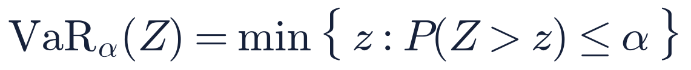
z) ≤ α}" style="width:707px;height:73px;object-fit:contain">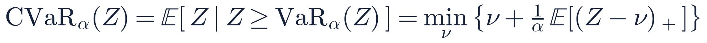
뒤의 최소화 꼴(Rockafellar–Uryasev) 덕분에 CVaR는 볼록하고 최적화에 바로 넣을 수 있다 [18]. CVaR ≤ z이면 P(Z > z) ≤ α도 따른다 — 확률 제약의 보수적 surrogate다.
travplan RiskCost — 스텝 위험 = cost + β·σ + γ·동적 장애물, 그 상위 ⌈αT⌉ 스텝의 평균:
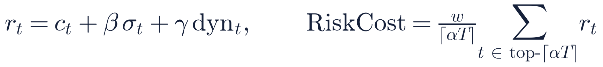
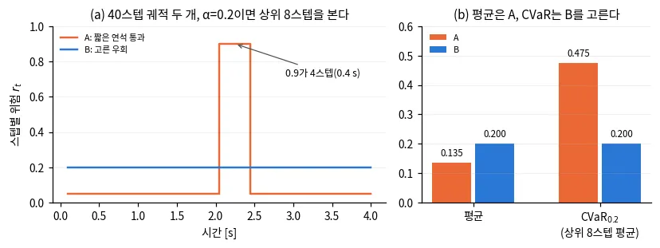
α = 0.2, 40스텝 두 궤적 — 평균은 A, CVaR는 B를 고른다 (travplan 작도)
A: 대부분 0.05, 네 스텝만 0.9 → 평균은 낮지만 CVaR₀.₂ = 0.475. 위험한 한 구간을 평균이 지운다.
“로봇은 위험을 어떻게 재야 하나” — 공리적 근거 [19]
[18] Rockafellar & Uryasev, “Optimization of Conditional Value-at-Risk”, Journal of Risk 2(3), 2000 — doi:10.21314/JOR.2000.038
[19] Majumdar & Pavone, “How Should a Robot Assess Risk? Towards an Axiomatic Theory of Risk in Robotics”, ISRR 2017 — arXiv:1710.11040
§0.4 · CONTROL BARRIER FUNCTION
명령을 최소한으로 고쳐 안전 집합에 남긴다
안전 집합 = {x : h(x) ≥ 0}. 경계에 가까울수록 h가 줄어드는 속도를 제한한다 [20].
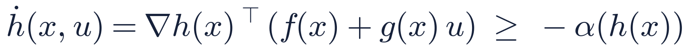
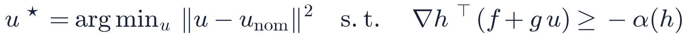
제약이 하나면 QP의 해는 반공간으로의 수직 투영, 닫힌 식이다 (a = ∇hᵀg, b = −α(h) − ∇hᵀf):
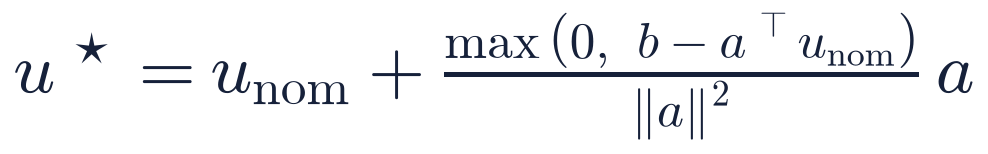

(a) 멈춘 보행자 앞 명령 (b) 허용 반공간으로의 투영 — travplan 작도
예: u_nom = (1.2, 0) m/s → u* = (0.68, −0.13). 속도를 줄이고 옆으로 살짝 비킨다.
MPPI의 페널티는 “대개” 피하게 할 뿐이다. CBF는 매 스텝 불변성을 준다 — 단, 모델이 맞을 때 [21].
[20] Ames et al., “Control Barrier Function Based Quadratic Programs for Safety Critical Systems”, IEEE TAC 2017 — arXiv:1609.06408
[21] Ames et al., “Control Barrier Functions: Theory and Applications”, ECC 2019 — arXiv:1903.11199
§C.2 · CVaR BARRIER FUNCTION
다음 스텝 여유의 나쁜 꼬리가 줄지 않게
보행자 위치가 불확실하면 다음 스텝 여유 hₖ₊₁도 분포다. 그 아래 β 꼬리에 조건을 건다 [22].

β → 0
있을 수 있는 모든 위치를 피한다 (보수적)
β → 1
평균 위치만 피한다 (위험 중립)
적응 β
군중 밀도에 따라 스스로 고른다 [23]
travplan에서는 TP-0014의 1순위 후보 — 보행자 예측 분포를 MPPI 뒤 안전 필터로 잇는 다리다.
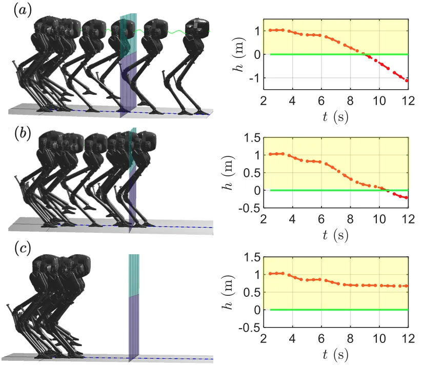
CVaR-BF (Fig. 1) [22] — (a) barrier 없음 (b) 위험 중립 (c) CVaR barrier만 h > 0 유지
[22] Ahmadi et al., “Risk-Averse Control via CVaR Barrier Functions: Application to Bipedal Robot Locomotion”, IEEE L-CSS 2022 — arXiv:2011.01578
[23] Wang et al., “Safe Navigation in Uncertain Crowded Environments Using Risk Adaptive CVaR Barrier Functions”, IROS 2025 — arXiv:2504.06513
§0.13 · CONFORMAL PREDICTION
오차를 정렬해 반경 하나를 고른다
학습한 예측기 위에 덧씌운다. 보정용 데이터의 오차 rᵢ = ‖ŷ(xᵢ) − yᵢ‖만 있으면 된다. 분포 가정이 없다 [24].

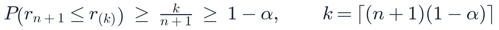
보장의 근거는 교환 가능성(exchangeability) 하나 — 새 오차가 보정 오차들 사이 어느 순위에 올지 균등하다.
예: 보행자 9명, α = 0.2 → k = ⌈10 × 0.8⌉ = 8 → 반경 0.52 m
MPC 제약에 넣을 때는 시점 T개를 동시에 보장하도록 δ/T로 나눈다 [25].

Lindemann et al. (Fig. 2) [25] — 먼 미래일수록, 동시 보장 시점이 많을수록 반경이 커진다
[24] Angelopoulos & Bates, “A Gentle Introduction to Conformal Prediction and Distribution-Free Uncertainty Quantification”, 2021 — arXiv:2107.07511
[25] Lindemann et al., “Safe Planning in Dynamic Environments using Conformal Prediction”, IEEE RA-L 2023 — arXiv:2210.10254
travplan · 운동학 벤치마크
인식을 현실에 가깝게 할수록 떨어지고, 수식이 다시 올린다
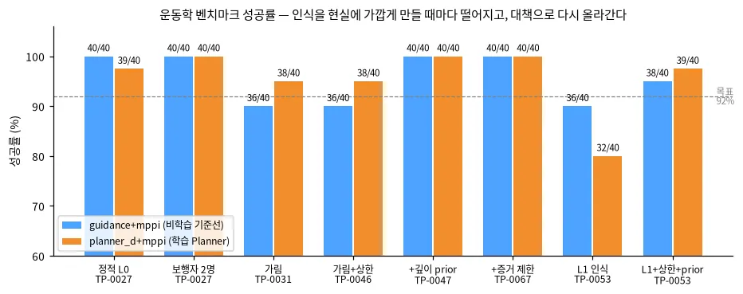
가림(TP-0031) → 포트홀 둘레 실패, 36/40
그림자 상한 + 깊이 prior(TP-0044·0047) → 40/40 — 상한 층 식
L1 인식(TP-0053) → 32–36/40, 상한+prior로 38–39/40
파랑 = guidance+mppi(비학습 기준선), 주황 = planner_d+mppi(학습 Planner). 점선은 목표 92 %. 각 막대는 40 에피소드.
출처: travplan 대시보드 evidence 그림(ev_benchmark_progress), 각 TP 결과 폴더 · 혼돈 조건 수치는 짝 비교와 잡음 바닥으로 판정한다(CLAUDE.md 2층)
STUDY PATH
한 줄 요약과 다음에 읽을 곳
| 개념 | 한 줄 | travplan 코드 | 문서 |
|---|---|---|---|
| Elevation map | 정밀도 가중 평균 + 광선 상한 | perception/ (L1) | §A.1 |
| 이분산 NLL | σ = |오차|에서 최소, 1/σ² 가중 주의 | traversability.py | §0.8 |
| BKI | 거리 커널로 관측을 세어 사후분포 | (후보) | §0.10 |
| Diffusion | 노이즈 예측 = score, guidance = 에너지 기울기 | (비교용 샘플러) | §0.5 |
| Flow matching | 직선 보간의 속도 회귀, Euler 10스텝 | flow_model.py | §0.6 |
| MPPI | 볼츠만 가중평균 = KL 투영 | control/mppi/ | §0.2 |
| NMPC + GP | 분산 → 제약 여유 ρₖ | control/acados_mpc/ | §M |
| CVaR | 상위 α 꼬리의 평균, 볼록 | RiskCost | §0.3 |
| CBF · CVaR-BF | 반공간 투영 / 여유 분포의 꼬리 | (TP-0014 후보) | §0.4, §C.2 |
| Conformal | 오차의 ⌈(n+1)(1−α)⌉번째 = 반경 | (후보) | §0.13 |
더 깊이: 배경·수식 문서의 “수식 보기” 토글 · 강화학습 문서 §R(버클리 CS 185/285 순서) · 매일 09시 Telegram 스터디 노트
REFERENCES 1 / 2 · 인식 · Planner
참고문헌
[1] Nav2 maintainers, “Redesign Environmental Representation”, ros-navigation/navigation2 Issue #1278, 2019.
[2] P. Fankhauser, M. Bloesch, C. Gehring, M. Hutter, R. Siegwart, “Robot-Centric Elevation Mapping with Uncertainty Estimates”, CLAWAR 2014.
[3] T. Miki, L. Wellhausen, R. Grandia, F. Jenelten, T. Homberger, M. Hutter, “Elevation Mapping for Locomotion and Navigation using GPU”, IROS 2022. arXiv:2204.12876
[4] A. Kendall, Y. Gal, “What Uncertainties Do We Need in Bayesian Deep Learning for Computer Vision?”, NeurIPS 2017. arXiv:1703.04977
[5] W. Vega-Brown, M. Doniec, N. Roy, “Nonparametric Bayesian Inference on Multivariate Exponential Families”, NeurIPS 2014.
[6] L. Gan, R. Zhang, J. Grizzle, R. Eustice, M. Ghaffari, “Bayesian Spatial Kernel Smoothing for Scalable Dense Semantic Mapping”, RA-L 2020. arXiv:1909.04631
[7] J. Ho, A. Jain, P. Abbeel, “Denoising Diffusion Probabilistic Models”, NeurIPS 2020. arXiv:2006.11239
[8] Y. Song et al., “Score-Based Generative Modeling through Stochastic Differential Equations”, ICLR 2021. arXiv:2011.13456
[9] M. Janner, Y. Du, J. Tenenbaum, S. Levine, “Planning with Diffusion for Flexible Behavior Synthesis”, ICML 2022. arXiv:2205.09991
[10] J. Ho, T. Salimans, “Classifier-Free Diffusion Guidance”, NeurIPS Workshop 2021. arXiv:2207.12598
[11] H. Chung et al., “Diffusion Posterior Sampling for General Noisy Inverse Problems”, ICLR 2023. arXiv:2209.14687
[12] Y. Lipman et al., “Flow Matching for Generative Modeling”, ICLR 2023. arXiv:2210.02747
[13] X. Liu, C. Gong, Q. Liu, “Flow Straight and Fast: Learning to Generate and Transfer Data with Rectified Flow”, ICLR 2023. arXiv:2209.03003
REFERENCES 2 / 2 · Controller · 안전
참고문헌
[14] G. Williams et al., “Information Theoretic Model Predictive Control: Theory and Applications to Autonomous Driving”, IEEE T-RO 2018. arXiv:1707.02342
[15] T. Kim et al., “Smooth Model Predictive Path Integral Control without Smoothing”, IEEE RA-L 2022. arXiv:2112.09988
[16] L. Hewing, J. Kabzan, M. Zeilinger, “Cautious Model Predictive Control Using Gaussian Process Regression”, IEEE TCST 2020. arXiv:1705.10702
[17] R. Verschueren et al., “acados — a modular open-source framework for fast embedded optimal control”, Math. Prog. Comp. 2022. arXiv:1910.13753
[18] R. T. Rockafellar, S. Uryasev, “Optimization of Conditional Value-at-Risk”, Journal of Risk 2(3), 2000. doi:10.21314/JOR.2000.038
[19] A. Majumdar, M. Pavone, “How Should a Robot Assess Risk? Towards an Axiomatic Theory of Risk in Robotics”, ISRR 2017. arXiv:1710.11040
[20] A. D. Ames, X. Xu, J. W. Grizzle, P. Tabuada, “Control Barrier Function Based Quadratic Programs for Safety Critical Systems”, IEEE TAC 2017. arXiv:1609.06408
[21] A. D. Ames et al., “Control Barrier Functions: Theory and Applications”, ECC 2019. arXiv:1903.11199
[22] M. Ahmadi et al., “Risk-Averse Control via CVaR Barrier Functions: Application to Bipedal Robot Locomotion”, IEEE L-CSS 2022. arXiv:2011.01578
[23] X. Wang et al., “Safe Navigation in Uncertain Crowded Environments Using Risk Adaptive CVaR Barrier Functions”, IROS 2025. arXiv:2504.06513
[24] A. N. Angelopoulos, S. Bates, “A Gentle Introduction to Conformal Prediction and Distribution-Free Uncertainty Quantification”, 2021. arXiv:2107.07511
[25] L. Lindemann et al., “Safe Planning in Dynamic Environments using Conformal Prediction”, IEEE RA-L 2023. arXiv:2210.10254
“travplan 작도” 그림과 TP 결과: Geonhee-LEE/travplan 리서치 문서(배경·수식 §0, 인식 §A, Planner §B, Controller §E·§C, MPC §M) — 공개 사이트 geonhee-lee.github.io/travplan-site